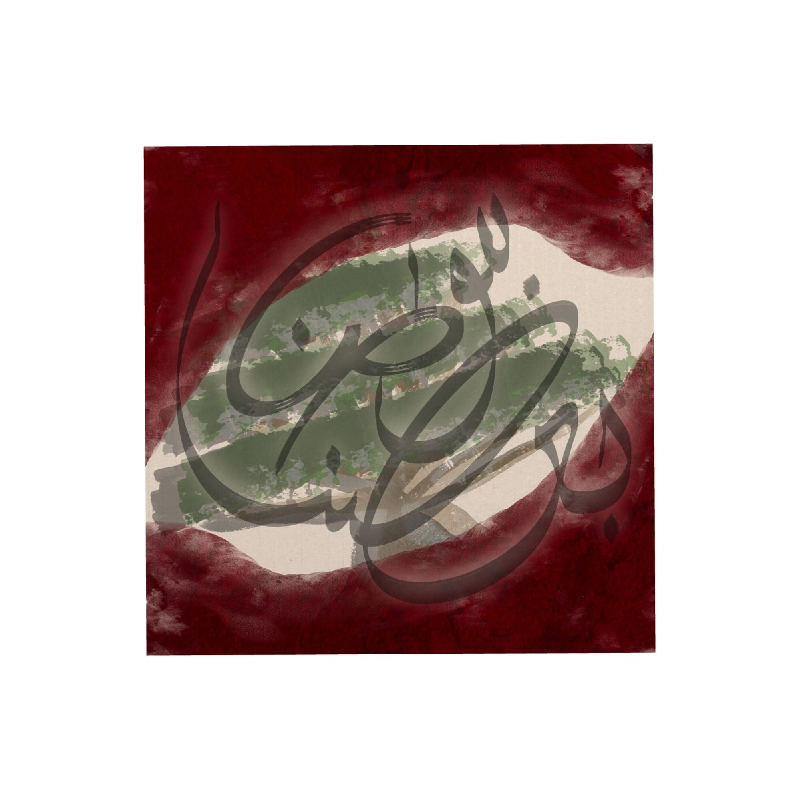

لماذا أنجِز؟Why ENJZ
ENJZ is أنجِز — the imperative. Accomplish it. It also carries the initials of the people I love.

What follows is the text the whole project came out of — written first, built into pictures afterwards.
هو أن يحترق طائر الفينيق ليبعث في لغة الضاد في أرض الأندلس قبل أن يحين المغيب
ماذا تعني كلّ الاحتمالات عندما لا تستطيع الاختيار؟
ماذا يعني عالم مليء بالألوان عندما لا تستطيع أن تشرق الشمس؟
ماذا يعني الغد عندما تعيش في الأمس؟
"أنجِز"… كل أفكارك التي غطاها الغبار… كل مغامراتك التي عثرتها الأفكار… كل حبٍّ زرعته ولم يؤت ثمار…
"أنجِز"… هي قصة كل شخص قرر أن يعود إلى أحلام الطفولة حيث لا خوف من فشل أو إرهاق. حيث تصنع مخيلتك عوالم لا متناهية تكون فيها الفنان والطبيب والمهندس والحالم الولهان.
كبرنا جميعًا ووضعنا أفكارنا في لحظة ما في جعبة منسية وراء الباب. وجعلنا نطرق سبل الحياة متجاهلين تلك الجعبة… خائفين أن يرى الناس ماذا تحوي… نفكر بها وننكر وجودها وفي كل مرة نمرّ بجانبها، نتحسّر ونكمل المسير.
"أنجِز"… هي تلك الجعبة تعود على مكتبي بعد الأربعين. أفتحها، أُخرج ما بداخلها، ولا أخاف لوم اللائمين.
"أنجِز"… هو أن أبعث من جديد في يوم ليس لي، وليس لأحدٍ… أن أرى أنني أمسي وغدي، وأن العالم كبير ووسيع ولا حدود لمن يريد السبيل…
"أنجِز"… ليست ميدالية مشاركة دون ربح… وليست أملًا دون كدّ… هي إيمانٌ بعيون لا تبكي إلّا ما ندر. هي بلاد تختلط فيها كل عروق البشر… هو أن يحترق طائر الفينيق ليبعث في لغة الضاد في أرض الأندلس قبل أن يحين المغيب…
What do all possibilities mean when you cannot choose?
What does a world full of colour mean when the sun cannot rise?
What does tomorrow mean when you live in yesterday?
Enjz — all your ideas covered in dust, all your adventures crippled by thoughts, all the love you planted that never bore fruit.
Enjz is the story of everyone who chose to return to childhood dreams, where there is no fear of failure or exhaustion, where imagination forges infinite worlds in which you are the artist, the doctor, the engineer, and the lovestruck dreamer.
We all grew up and, at some point, placed our ideas into a forgotten satchel behind the door. We went on knocking at life's doors, ignoring that satchel, afraid of what people might see inside it. We think of it, deny its existence, and each time we pass by it we sigh in regret and keep walking.
Enjz is that satchel returning to my desk after forty. I open it, take out what is inside, and do not fear the blame of those who blame.
Enjz is to be reborn on a day that belongs neither to me nor to anyone — to see that I am both my yesterday and my tomorrow, and that the world is vast and wide, with no limits for one who seeks the path.
Enjz is not a participation medal without victory, nor hope without toil. It is faith in eyes that rarely cry. It is a land where all human races intertwine. It is the phoenix burning so it may rise again in the language of Ḍād, on the land of al-Andalus, before sunset comes.
See where it went
The text became a body of work: five collections, each one a different way of carrying the same thing.
See the works